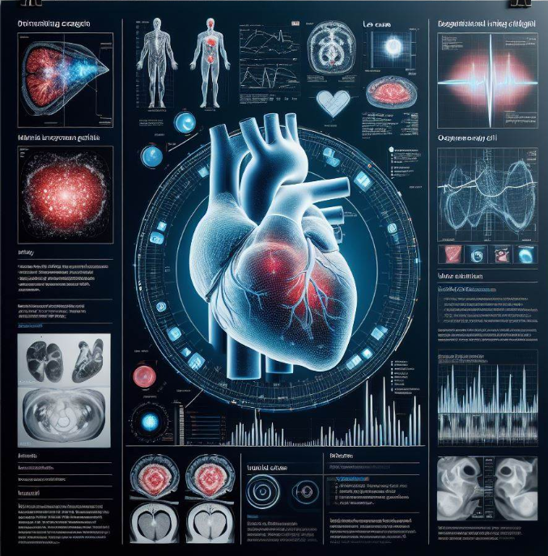
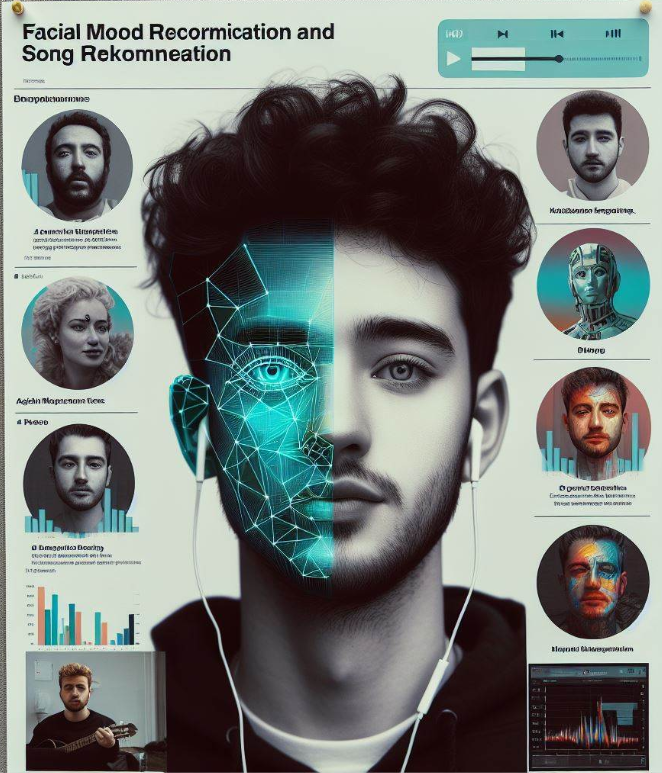

Syed Waheedulla
Computer Science and Engineering Student
Computer Science and Engineering Student
I'm Syed Waheedulla, a dedicated Computer Science and Engineering student at Chandigarh University, specializing in AI and ML. With a proven track record in school tournaments, I possess strong delegation and teamwork skills. My academic focus has equipped me with a deep understanding of AI and ML principles, fostering my desire to make a positive impact in dynamic and collaborative work environments. Combining technical proficiency with effective communication, I am poised to contribute meaningfully to technological advancements in the AI and ML fields.
Chandigarh University, Gharuan
Session: 2021-2025 | Score: 8.45 CGPA
Sri Chaitanya Jr. Kalashala, Hyderabad
Session: 2019-2020 | Percentage: 96.6%
Don Bosco High School, Hyderabad
Session: 2018-2019 | Percentage: 97%


Email: syedwaheedulla45@gmail.com
Phone: +91 7893110450
Download Resume